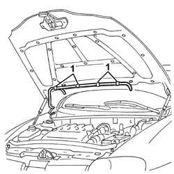
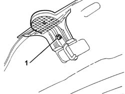

7205E20 STRIPPING BONNET LID
- Path
- Procedures > 72 PANELS AND FRAME > 7205 STRIPPING FOR REPLACEMENT OPERATIONS > 7205E EXTERIOR PARTS > 7205E20 STRIPPING BONNET LID
- Kind
- repair procedure (removal / refitting; the operation number is the code)
- Applies to
- all engines; all production periods
- Interactive page
- https://sloeber94.github.io/elrnDB-aGt/en/#/125002015
Applies to: all engines; all production periods
 Removing
Removing
 Refitting
RefittingOp. 7025A22 SOUNDPROOFING LINING FOR BONNET LID - R+R
Op. 5050B10 FRONT WINDSCREEN WASHER JETS - R+R CLEAN AND/OR POSITION
(right and left)
1. Disconnect the pipe from the windscreen washer jets.

Applies to: all engines; all production periods
1. Undo the bolt.
2. Remove the crest mount.

Applies to: all engines; all production periods
Refitting
RemovingCheck that the parts to be refitted are undamaged.
Position the badge mounting and secure it using the bolt.
Position the windscreen wiper pipe.
Op. 5050B10 FRONT WINDSCREEN WASHER JETS - R+R CLEAN AND/OR POSITION
(right and left)